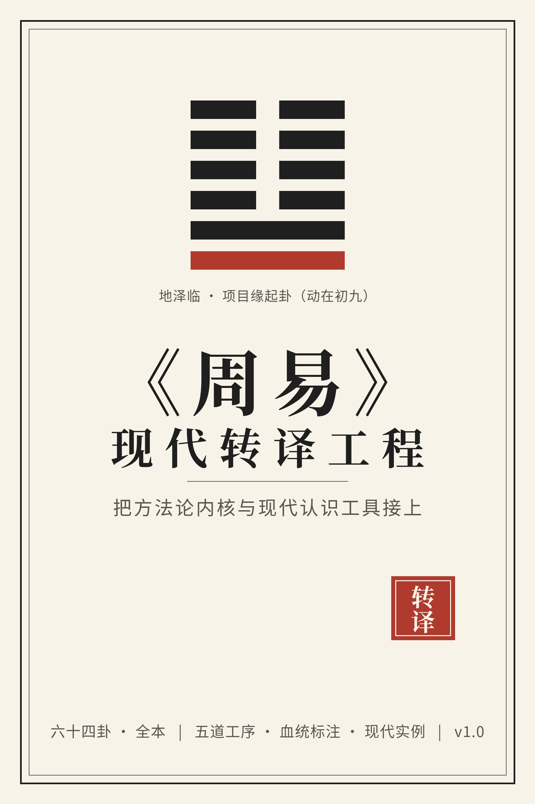

《周易》现代转译工程 · 可检索站点
把方法论内核，
接上现代认识工具
六十四卦逐一过手，每卦六节：训诂 → 语境 → 结构 → 现代转译 → 实践清单 → 卦际关联。 不神化为玄学，不贬为江湖术数——只做文本解读与方法论研究。
64 卦全本 · 检验实例 111+ · 术语 400+ · 血统标注逐句可核
检索全书
输入即搜：卦名、卦序、卦爻辞关键词、现代转译、实践清单、实例名都可以。
主题簇 · 按问题进入
不必从乾卦顺序读起。点一条主线，卡片墙随之过滤。
六十四卦 · 卡片墙
按卦序 1-64 排列，卡片标主题标签；点进单卦读六节全文。
1䷀
乾
自强不息与时机进退
2䷁坤
承载配合与底线
3䷂屯
创业维艰
4䷃蒙
教育启蒙
5䷄水天需
等待与时机
6䷅天水讼
争端与止损
7䷆地水师
动员组织与纪律
8䷇水地比
亲比与联盟
9䷈风天小畜
小有积蓄与克制
10䷉天泽履
践履与风险秩序
11䷊地天泰
通泰与居安思危
12䷋天地否
闭塞与守持待时
13䷌天火同人
协作与同盟
14䷍火天大有
大有与治理
15䷎地山谦
谦抑与平衡
16䷏雷地豫
预备与安逸
17䷐泽雷随
追随与随时
18䷑山风蛊
整治积弊
19䷒地泽临
治理感通
20䷓风地观
观察与示范
21䷔火雷噬嗑
咬合除梗与惩罚次序
22䷕山火贲
文饰与实质
23䷖山地剥
剥落与止损
24䷗地雷复
复归与重启
25䷘天雷无妄
守正不妄为与无妄之灾的应对
26䷙山天大畜
大积蓄与养贤设防
27䷚山雷颐
颐养与节欲
28䷛泽风大过
非常之时的非常之举
29䷜坎为水
重险与行险有孚
30䷝离为火
依附与光明
31䷞泽山咸
感应与共情
32䷟雷风恒
恒久与守变
33䷠天山遯（遁）
退避与战略撤退
34䷡雷天大壮
强盛与节制
35䷢火地晋
进取与晋升
36䷣地火明夷
光明受损期的守持
37䷤风火家人
内部治理
38䷥火泽睽
睽违与求同
39䷦水山蹇
险阻与反身修德
40䷧雷水解
解除险难与善后
41䷨山泽损
减损与成本承担
42䷩风雷益
增益与施予下放
43䷪泽天夬
决断与清除积弊
44䷫天风姤
相遇与防微
45䷬泽地萃
聚合与凝聚
46䷭地风升
上升与台阶式成长
47䷮泽水困
困境与守持出口
48䷯水风井
供给体系与公共品
49䷰泽火革
变革的方法
50䷱火风鼎
建制立新
51䷲震为雷
震动应对
52䷳艮为山
知止与边界
53䷴风山渐
渐进与次序
54䷵雷泽归妹
错位配合
55䷶雷火丰
盛大与蔽障
56䷷火山旅
羁旅与客场生存
57䷸巽为风
渗透与申命
58䷹兑为泽
欣悦与说服
59䷺风水涣
涣散与重聚
60䷻水泽节
节制与制度
61䷼风泽中孚
信任与可信信号
62䷽雷山小过
小过与尺度
63䷾水火既济
完成态的守成
64䷿火水未济
未成态的收束与再出发
未命中——试试「消长」「艰难」「信任」等主题词
全文检索结果
上方输入关键词，这里显示命中的页面、片段与跳转。